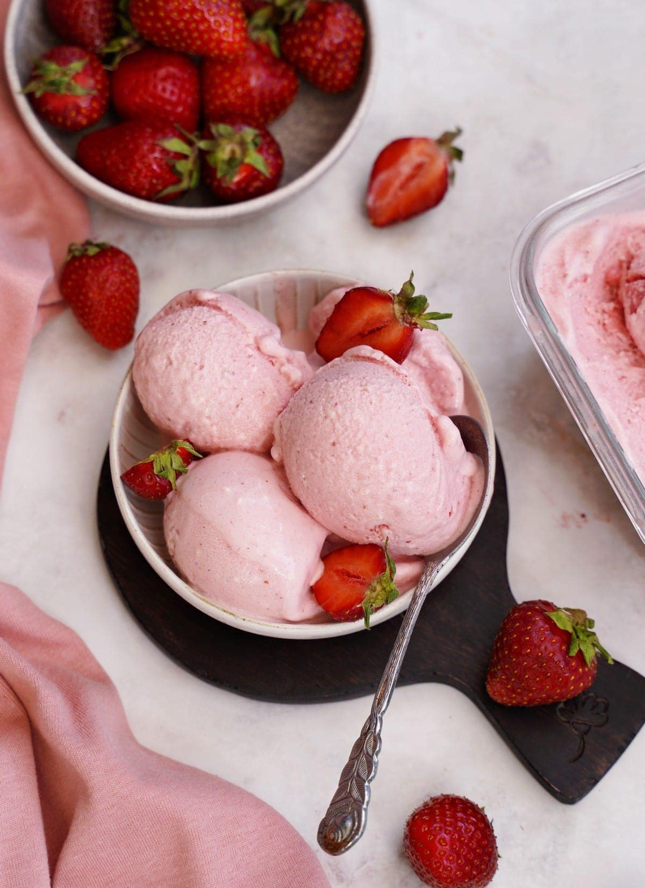

Easy Strawberry Ice Cream
Home

Recipes Details
Strawberry ice cream is super easy to make with ripe juicy strawberries and this recipe that doesn't use an
egg-custard base but still tastes rich and creamy.
Ingredients
- Strawberries
- Milk/Cream
- Sugar
- Vanilla and salt
- Food coloring
Steps
- Combine all the ingredients in a large bowl.
- Transfer the mixture to the freezer bowl of an ice cream maker.
- Freeze according to the manufacturers directions.
- Transfer the ice cream to an airtight container and freeze until firm.